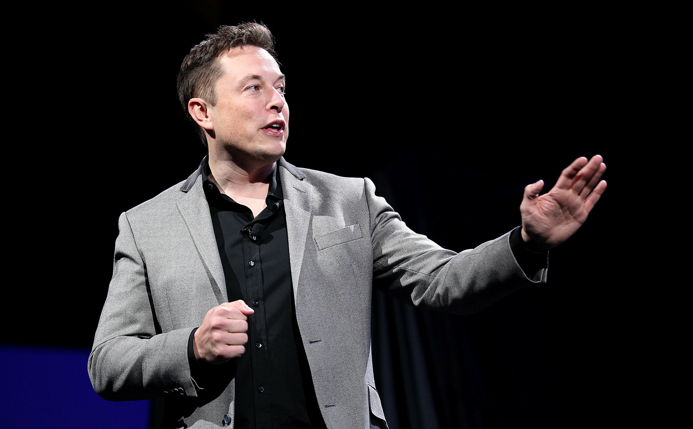

Elon Musk
1971 - Present
“When something is important enough, you do it even if the odds are not in your favor.”
Biography
Elon Musk is a South African-born American entrepreneur and business magnate known for founding SpaceX, Tesla Inc., Neuralink, and The Boring Company. He played a major role in the development of PayPal and Zip2. Musk is widely recognized for his vision to revolutionize transportation both on Earth and in space. His passion for advancing technology and sustainability has transformed industries including automotive, aerospace, energy, and AI.